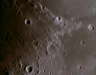
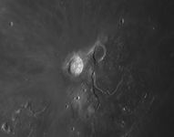
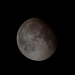

Le cratère Bullialdus photographiée grâce à la lunette de 160 mm de diamètre de l'observatoire
La Lune
Probablement créée il y a 4,6 milliards d'années par la collision entre la Terre et un corps céleste de la taille de Mars, la Lune gravite en moyenne à 384 000 km de la Terre.


Le cratère Julius

L'ancien cirque lunaire Stöfler

Le cratère Héraclite

Tycho, cirque lunaire jeune de 80 km de diamètre avec des remparts de 3500 m. Photographie réalisée grâce à un télescope C.11 de 280 mm de diamètre muni d'une lentille de barlow x2 et d'une caméra DMK 31

La "Tête de Cobra lunaire": Les cratères Aristarque (à gauche) et Hérodote, et la vallée de Schröter

La Lune gibbeuse photographiée au foyer d'un télescope Sky-watcher de 130 mm de diamètre.